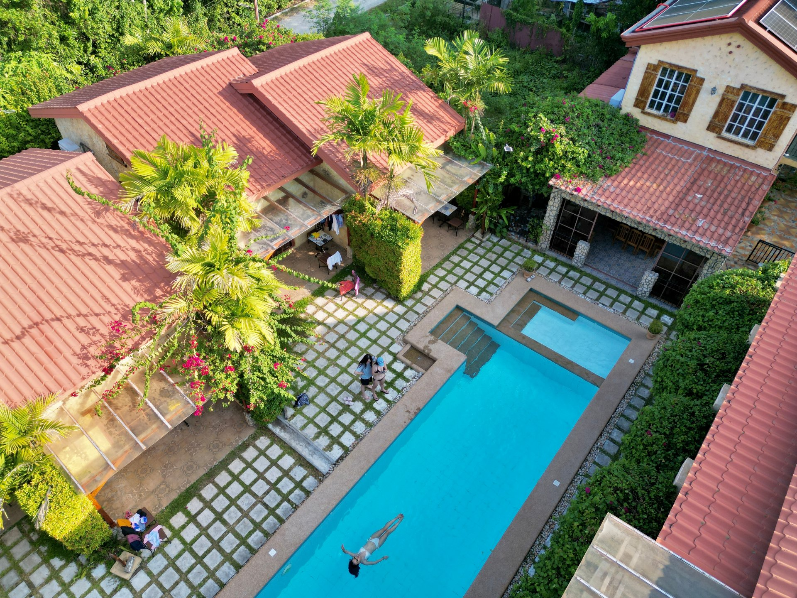
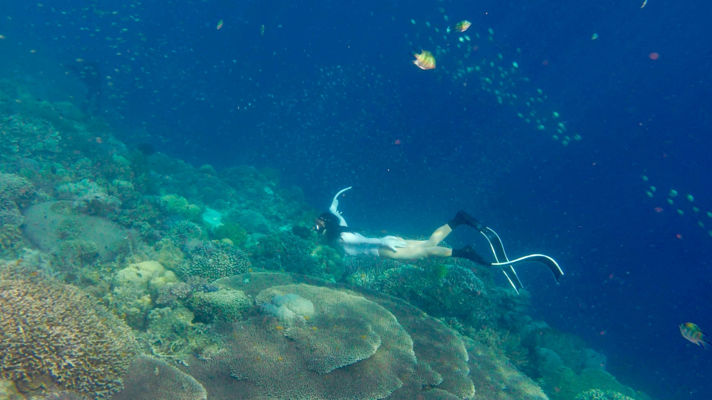
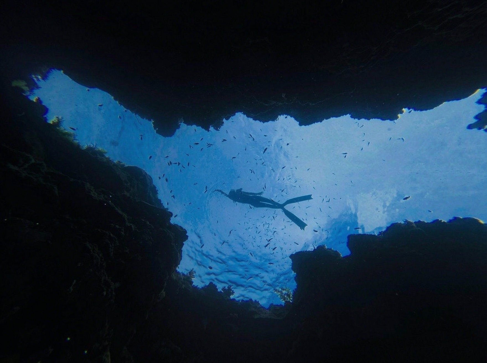
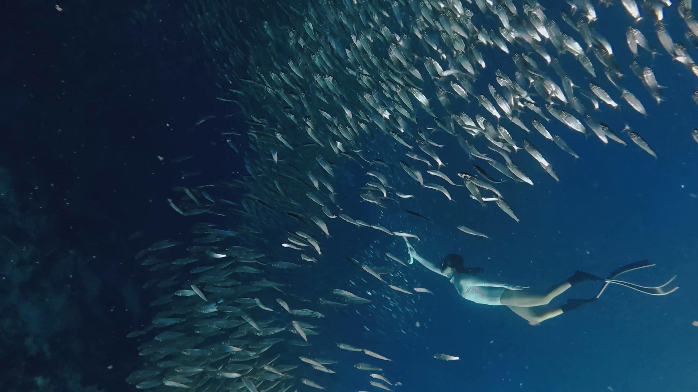
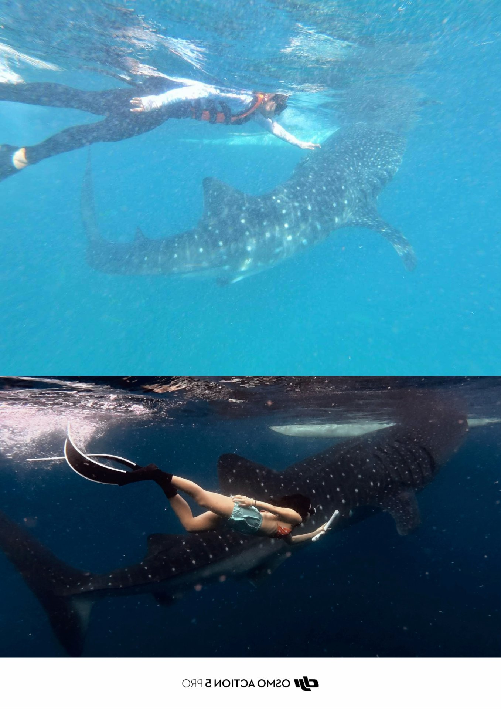
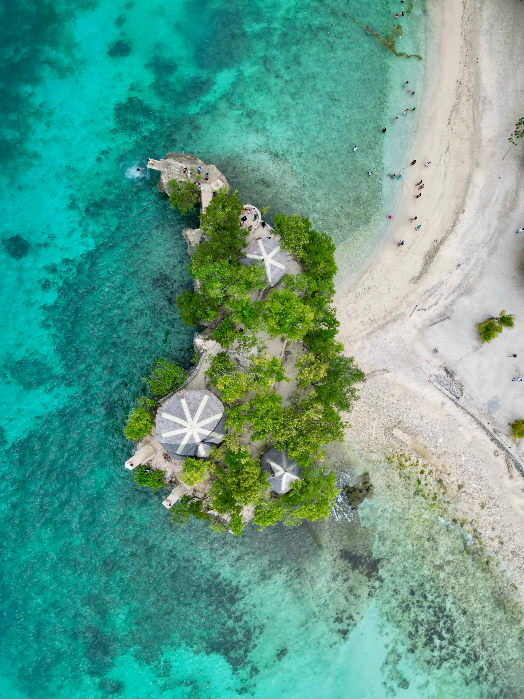
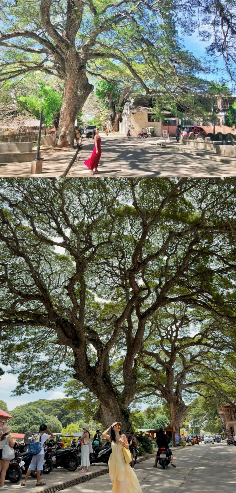
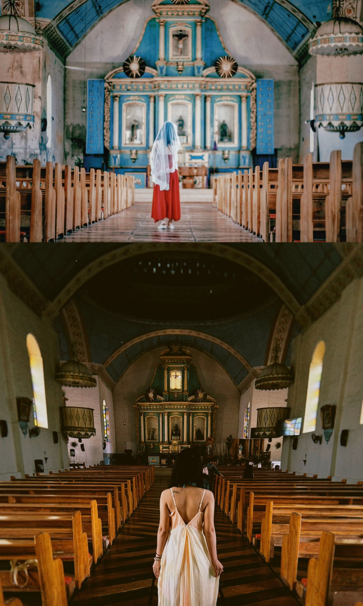
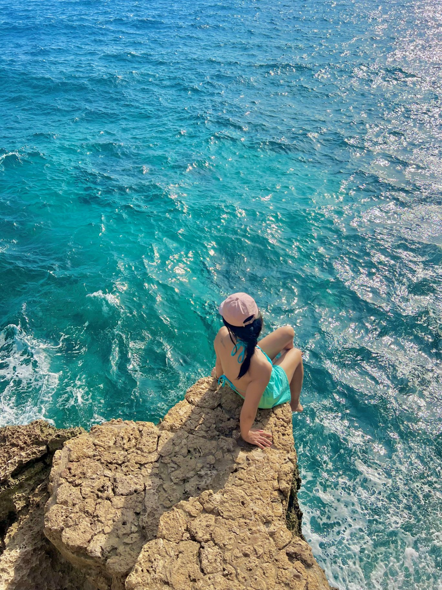

8年后，还是 4 个人的行程，但只有我又来了菲律宾，又站在了锡基霍尔的跳台下面。
2018 年春节，我一个人从上海出发，飞到杜马盖地，独自流浪两天后和小伙伴汇合，走了锡岛—薄荷—奥斯洛布的小环线。
2026 年 8 月，我和一个妹妹从深圳出发——我们第一次见面是在马尔代夫，第二次见面，就是相约来了菲律宾。在宿务和北京、上海来的朋友汇合后，走了宿务—薄荷—锡岛—奥斯洛布—墨宝的顺时针大环线。
从第一次一个人出国、会做 100 多页 PDF 行程计划的 J 人，到如今行程只有几行字、计划只做一半的 P 人。
其实这不是随性，是教训换来的。当年的新手 J 人计划做得严丝合缝，却因为看错一次船期，整个行程被打乱；如今的「老 J 人」，会先考虑 8 月台风季停航的风险——所以这次只制定了半程，把另一半留给弹性。不得不说运气很好：全程大晴天，我们前脚离开，后脚下雨。
有时候感慨什么都没变，又感觉变了很多。
一、两次菲律宾，摆在一起看
| 2018 年 2 月春节（第一次） | 2026 年 8 月暑假（这次） | |
|---|---|---|
| 进出 | 杜马盖地进，小环线 | 宿务进，顺时针大环线 |
| 天数 | 10 天 9 晚 | 9 天 8 晚 |
| 路线 | 锡岛—薄荷—奥斯洛布—苏米龙 | 宿务—薄荷—锡岛—奥斯洛布—墨宝 |
| 新增 | 苏米龙、APO 岛 | 墨宝（沙丁鱼风暴 + 溯溪） |
| 人数 | 4 人，2 男 2 女（房费开销大） | 4 人（换了一批人，只有我又来了，4 女生节约房费） |
| 人均花费 | 约 ¥6200（春节机票略贵） | 约 ¥5000（全程带泳池酒店 + 包车） |
| 行程风格 | 初次体验，各个景点打卡 | 潜水为重点 |
第二次比第一次多玩了 1 天，人均反而少了 ¥1200——菲律宾的价格八年几乎没涨，升级的只是玩法：穷游有穷游的玩法，小富游有小富游的玩法，都不贵。
二、先说海：菲律宾是很多看海人的白月光
我是在菲律宾才真正认识海的。刚在游泳池学会游泳那几年，第一次去泰国差点淹死，之后好几年不敢下水。直到在菲律宾，「玻璃海」「果冻海」这些词突然全部具象化——干净、透明，珊瑚和鱼就在你脚边。
即便后来我去过了马尔代夫，依然强烈推荐喜欢海的朋友先来看看菲律宾的海：它对新手的友好程度，是白月光级别的存在。
唯一的「坏处」是：之后再去世界上任何地方看海，你都会默默拿它和菲律宾比。
三、关于语言：先走出去，一切都不是问题
走了这么多地方，还是总有人问我：英文不好怎么办？
八年前我的英文也很烂——从填入境卡开始，大部分单词都要查一遍，连 Reception（前台）都不认识，英文菜单全靠拍照翻译，还因为分不清 snorkeling（浮潜）和 diving（深潜），和当地船夫砍价砍得面红耳赤。
现在有 AI 翻译，比八年前方便太多。但真正的答案是：先走出去，然后你发现一切都不是问题。
那时候我在青旅遇到一位四十多岁的大哥，英文只有一句 "HI! THANK YOU"，照样独自旅行了很多国家。我问他过海关怎么办，他说：「反正我说中文，听不懂是他的问题，总有中国人或者什么人来帮我。」后来我们又在香格里拉、梅里雪山相遇——他去过的地方越来越多了。
四、预算与价格（2026 年 8 月实测，全部真实数字）
汇率：100 人民币 ≈ 933 比索（1 元 ≈ 9.3P），下表所有价格为比索。
| 项目 | 价格 | 我的点评 |
|---|---|---|
| 住宿（人均全程） | ¥1100 | 全程带泳池酒店，小富游标准 |
| 墨宝溯溪（1 向导带 2 人） | 1700P/人 | 全程 2–4 小时，体验极好 |
| 墨宝沙丁鱼风暴 | 400P/人 | 几乎 1 对 1 服务 |
| 奥斯洛布鲸鲨同游 | 1000P/人 | 全球独家 |
| 巴里卡萨包船 | 2800–3500P/船 | 出海路上可追海豚，可以追杰克风暴 |
| 巴里卡萨登岛费 | 300P/人 | 每人必给 |
| Napaling 大裂缝 | 300P/人 | 每人必给，潜导拍照另收 500P/人 |
| 墨宝—宿务包车 | 2500P/人 | 3 个多小时 |
| 锡岛 tutu 环岛包车 | 1500P/天 | 一整天，司机还帮看东西 |

「全程带泳池酒店」 · 2026 实拍
关于砍价：锡岛包车我没有砍太狠——出去玩的时候司机还负责看东西，一整天彼此都留个好心情。真想省钱的话，大巴、拼车、租摩托（需国际驾照）能大幅降低预算。（tips：离开市区，信号时有时无，酒店有 WIFI，现金交易为主，建议一人准备 2000RMB 左右比索合适。）
结论：菲律宾的性价比，放在整个东南亚都是第一梯队。
五、交通怎么走
- 岛与岛之间：基本靠坐船，线上可订票，也可码头现场买
- 市区：Grab 打车
- 其他地方：tutu + 包车组合；租摩托车需要国际驾照
六、逐站推荐（这次最值得去的几处）
这里是全球潜水员的乐园，也是新手的天花板。海边拍照一天三套拍不够，想躺平的绝佳去处。
薄荷岛 Bohol
① 巴里卡萨岛——从薄荷岛坐船约半小时。出海路上可以追海豚；自由潜的可以追杰克风暴，成群的杰克鱼围成巨大鱼墙，很适合拍震撼的水下大片；也有断崖可以体验深潜。新手或不会游泳的可以浮潜看珊瑚花园——珊瑚层次丰富，小鱼很多，海龟不少，适合拍清透自然的水下写真。

巴里卡萨岛 · 珊瑚花园之上
② Napaling 大裂缝——就在薄荷岛上，打车很近。两侧岩壁形成天然裂缝，很有电影感，潜水员必打卡。直接岸潜，下水就能看到彩色珊瑚和小鱼，断崖处珊瑚更丰富。

Napaling 大裂缝 · 从裂缝底仰望
墨宝 Moalboal
沙丁鱼群在头顶形成流动的「鱼云」。别的地方要看鱼群得出海包船追，这里岸潜就行，新手友好：下水就能看海龟，游出去 10 米就是沙丁鱼风暴。墨宝的溯溪也是夏天玩水的好体验。

沙丁鱼风暴 · 墨宝 Moalboal
奥斯洛布 Oslob
岸潜同游鲸鲨。这里的鲸鲨很温柔——你只要趴在船边，它会一边吃小虾米一边慢慢游到你身边。
说实话，这次原计划里没有鲸鲨。八年前那次体验并不美好：漫长的等待，整个水域弥漫着死鱼烂虾的腥臭。但朋友说，这是世界上唯一能如此轻易和鲸鲨同游的地方了，她不想留有遗憾——好，那就去。去了以后，朋友一直很兴奋地对我说：「如果不来这里，我应该此生难以体验。」回想 8 年前的自己，也是同样的兴奋。
8 年过去，这里真的变了：喂的是新鲜的小虾米，水也变得干净，还给鲸鲨划定了严格的保护区域。
关于喂食鲸鲨的争议一直没停——投喂会让它们改变迁徙习性。我八年前带着失望离开，八年后亲眼看到它在变好。争议也许还会继续，但这片水域正在往好的方向走。有些地方，去看过才有资格评论。

鲸鲨同游 · 上：2018 穿着救生衣 · 下：2026 自由潜
锡基霍尔 Siquijor —— 我最爱的岛
浮潜、赶海、追日出日落、海边跳台跳水、树藤牛奶湖跳水、椰林、秋千、沙滩、教堂、大树、无人机大片、环岛骑行，晚上再来个马杀鸡（约 700P/小时精油按摩）——生活再惬意不过。可以在这里躺平待一周。

Salagdoong · 从上帝视角看果冻海
八年前，我在 Lazi 教堂和朋友拍了一组头纱大片；这次我带上朋友的裙子故地重游。这八年，我们解锁了更多地图。

同一棵大树 · 上：2018 · 下：2026
八年前在 10 米跳台，我穿着救生衣、以为自己很英勇地跳了下去，冲出水面那一下腿软，变成坐姿入水，屁股和大腿淤紫了半个月。想着这次一定要刷新成就——结果赶上退潮，水太浅，10 米关闭，只开放 5 米。
好像上天也在说：没有那么多下次，没有那么多以后。

Salagdoong 跳台 · 2026 无人机视角

Lazi 教堂 · 上：2018 头纱 · 下：2026

锡基霍尔 · 悬崖边坐坐
一直在路上，就一直留有遗憾；但少一些「后悔当初」，总好过后悔那时候因为钱不够、时间不够、英文不好、不会游泳，而放弃出去走走。
接下来，继续用双脚丈量世界，也继续探索那 71% 的地球。
下一站见。
这篇也在公众号「Longer 的旅行生活」发布了： 阅读微信版原文 →